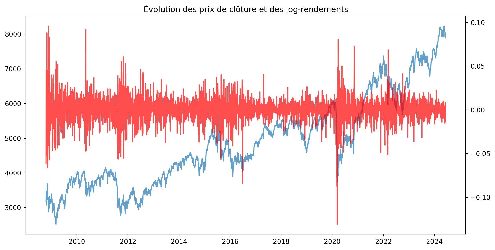

Ce projet a pour objectif d’étudier la mesure du risque de pertes extrêmes à partir d’une série historique de log-rendements boursiers, en combinant :
des approches classiques de VaR non paramétrique et gaussienne,
des méthodes plus avancées basées sur la pondération EWMA,
des lois de probabilité à queues épaisses (Skew-Student),
la théorie des valeurs extrêmes (TVE : GEV, GPD, POT),
et enfin des modèles dynamiques de volatilité (AR(1)-GARCH(1,1)) pour construire une VaR dynamique et backtestée.
Plus spécifiquement, il s’agira de :
comparer les différentes approches de VaR en termes de réalisme et de couverture du risque ;
mettre en place un protocole de backtesting adaptatif permettant de recalibrer les modèles lorsque ceux-ci ne décrivent plus correctement le risque observé.
import functionsimport importlibimport warningsimport numpy as npimport pandas as pdimport matplotlib.pyplot as pltimport seaborn as snsimport yfinance as yfwarnings.filterwarnings("ignore")ticker_symbol ="^FCHI"df_close = yf.download(ticker_symbol, start="2008-10-15", end="2024-06-11")[["Close"]]df_close.head(2)
[*********************100%***********************] 1 of 1 completed
Price
Close
Ticker
^FCHI
Date
2008-10-15
3381.070068
2008-10-16
3181.000000
Vérification des valeurs manquantes
Code
missing_values = df_close.isnull().sum().iloc[0]print(f"Nombre de valeurs manquantes dans 'Close': {missing_values}")
fig, ax1 = plt.subplots(figsize=(12, 6))ax1.plot(df_close.index, df_close["Close"], label="Close", alpha=0.7)ax2 = ax1.twinx()ax2.plot(df_close.index, df_close["Log Return"], color="red", label="Log Return", alpha=0.7)plt.title("Évolution des prix de clôture et des log-rendements")plt.show()

On observe une tendance haussière nette sur les prix, signe de non-stationnarité, tandis que les rendements semblent plus réguliers.